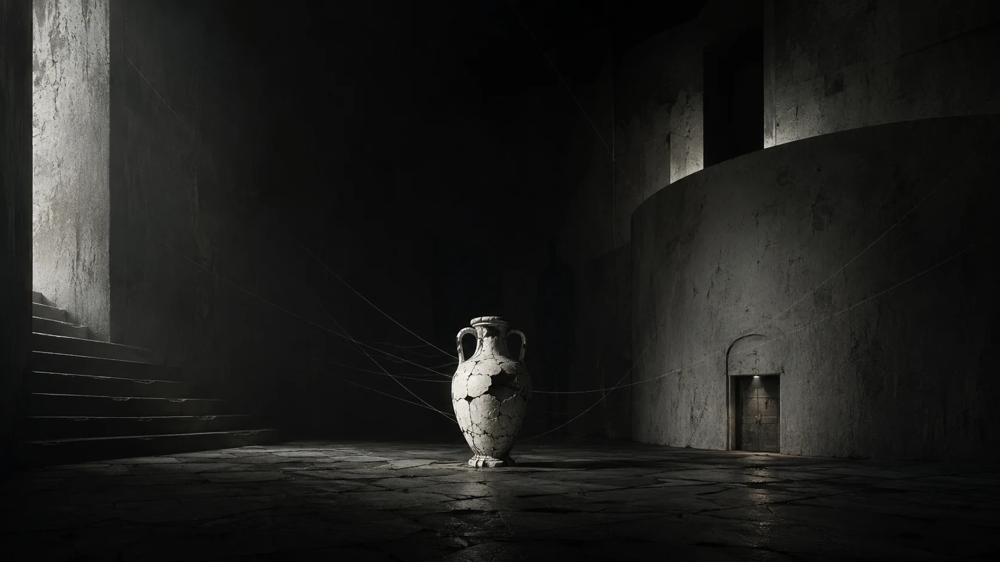

Recipiente de memória e contenção. Guardar protege, mas guardar também altera o que é guardado.

ÁLBUM · CATÁBASE · ENCARTE VIRTUAL
O Arranjo do Submundo
A mitologia vira engenharia interna: ânfora, casa, costura, criança e fera são organizadas como partes de um mesmo sistema.

CATÁBASE
A descida deixa de ser metáfora e ganha inventário.
O Arranjo do Submundo reúne o núcleo mais arqueológico da AMORFA. Hades, ânfora, criança, fera, costura e casa não aparecem como decoração mitológica: cada elemento funciona como peça de um sistema interno.
O disco parte de uma operação de catábase — descer para encontrar a estrutura por baixo da estrutura. Quanto mais fundo o percurso vai, menos importa contar uma história sentimental convencional e mais importa observar como trauma, memória e sobrevivência foram organizados para continuar de pé.
Por isso o “submundo” não é apenas inferno. É oficina, arquivo, quarto, anatomia e máquina.
O erro original não foi cair. Foi aprender a funcionar dentro da queda.
SISTEMA SIMBÓLICO
As peças do fundo
Duas figuras que não funcionam como “bem” e “mal”. São partes do mesmo organismo, uma vulnerável e outra adaptada à sobrevivência.
O espaço doméstico vira anatomia psíquica: quarto, parede, fresta, porão e passagem organizam a descida.
ARQUITETURA SONORA
Baixa tensão sonora, alta pressão interna.
Na faixa-tese, o arranjo trabalha com drone de subgrave, synth frio, harmônicos de vidro, raspagem de metal, fricção de papel e room tone. Há trechos sem beat e sem estrutura pop convencional.
O radicalismo está no volume contido: a claustrofobia não precisa de uma parede de guitarras. Ela pode nascer de um objeto acústico isolado, de uma consonante seca ou de um intervalo que não resolve.
FAIXA-Tese
O Arranjo do Submundo lista objetos quase forenses antes de reuni-los num circuito. A linguagem faz o que o título promete: organiza o fundo sem transformá-lo em explicação terapêutica.
ORDEM DA OBRA
Onze câmaras
01
Limiar
02
Os Portões de Hades
03
A Ânfora
04
Simbionte
05
A Sutura Invisível
06
O Devorador
07
O Arranjo do Submundo
08
Erro Original
09
Vidro Quente
10
Dose de Impulso
11
O Quarto de Sempre
Mitologia como engenharia
O álbum não exige crença literal no submundo. Hades oferece uma arquitetura pronta para pensar descida, limiar, guardião, travessia e retorno. A mitologia é usada como instrumento de leitura, não como dogma.
Isso permite que um objeto arcaico como a ânfora conviva com linguagem de circuito, arquivo e sistema. O passado mítico e a tecnologia contemporânea cumprem a mesma função: dar forma ao que, sem recipiente, seria apenas pressão.
O doméstico invade o mítico
Quando o percurso chega ao quarto e à casa, a escala muda. O submundo deixa de estar “lá embaixo” e passa a existir na arquitetura cotidiana. Essa contração é uma das decisões mais fortes do ciclo.
LEITURA EDITORIAL
Faixas-chave
01 · LIMIAR
Limiar
A entrada recusa uma versão pronta da identidade. A travessia começa quando o nome já não serve como passaporte.
03 · RECIPIENTE
A Ânfora
O recipiente central do universo AMORFA condensa a ambiguidade de todo arquivo: conservar também é aprisionar.
05 · COSTURA
A Sutura Invisível
Funcionar pode depender de uma operação que ninguém vê. A sutura não apaga a ferida; apenas permite que a forma continue.
07 · TESE
O Arranjo do Submundo
Ânfora, mandíbula, fio, ouro, criança e fera são colocados em posição. A canção age como inventário de uma máquina psíquica.
“Circuito fechado. / Respiração sem boca.”
08 · PARADOXO
Erro Original
O título desloca a culpa: o “erro” pode estar justamente na adaptação bem-sucedida a uma estrutura que jamais deveria ter exigido adaptação.
11 · QUARTO
O Quarto de Sempre
O mito termina encostando no doméstico. O quarto funciona como ponto em que arqueologia, corpo e memória deixam de ser separáveis.
EXTENSÃO DA CAPA
Escuro mineral, verde profundo, nenhum ornamento emprestado.
O encarte usa apenas a capa e o material visual explicitamente ligado ao ciclo Submundo. Nenhuma fotografia de entrevista ou de outro álbum entra como preenchimento.
O ARRANJO DO SUBMUNDO
Créditos editoriais
Construído a partir das letras do ciclo Catabasis/Anabasis, do mapa narrativo e do caderno de arquitetura sonora.
ARTISTAAMORFA
FORMATOÁlbum · 11 faixas
LANÇAMENTO17.08.2026
MATERIALIDADEBarro · vidro · metal · papel · subgrave